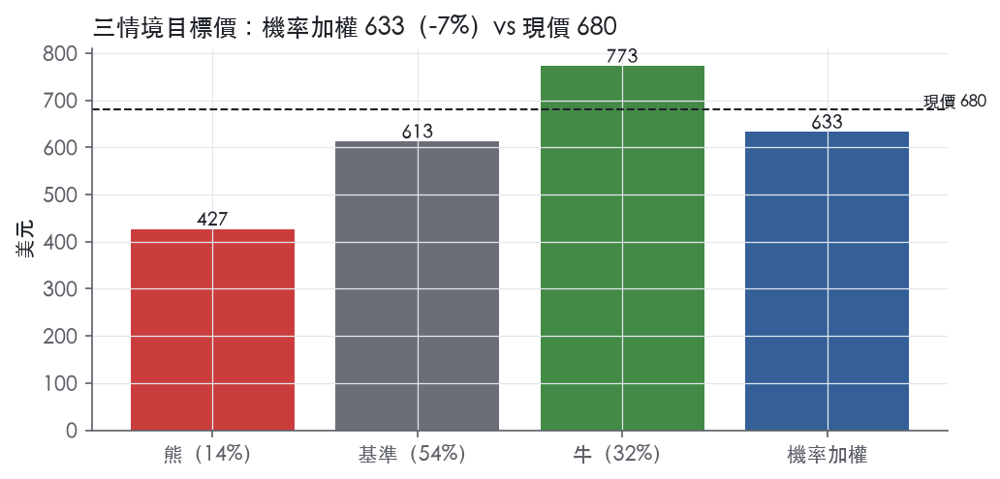
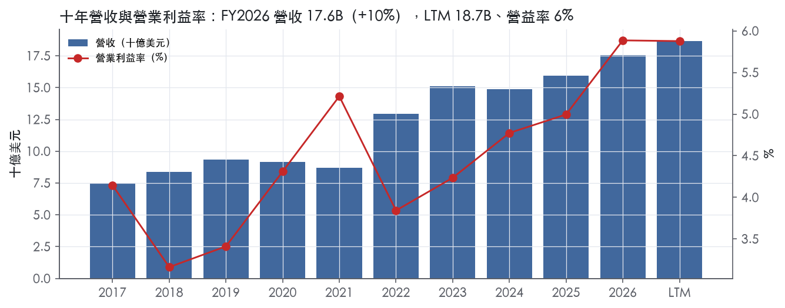
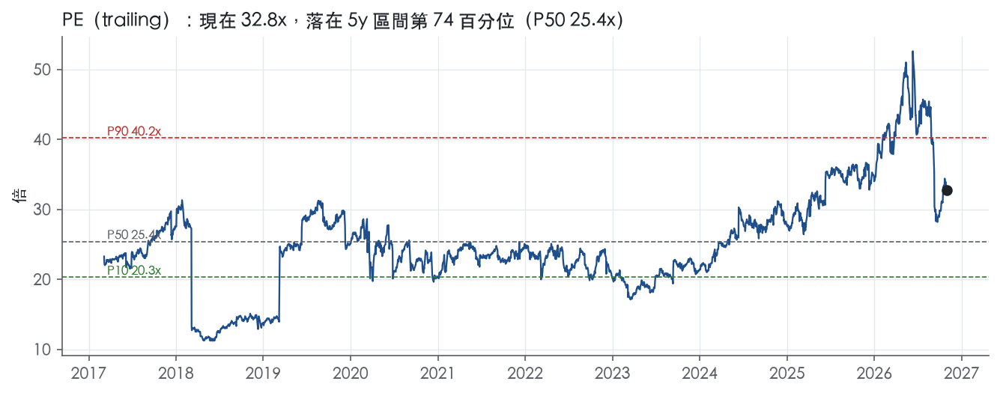
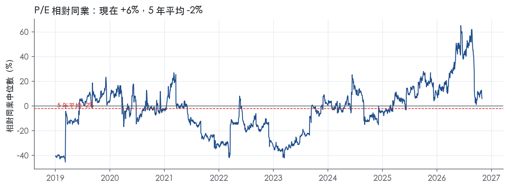
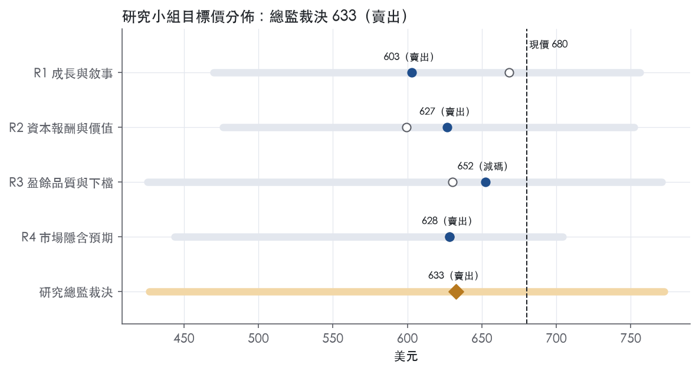
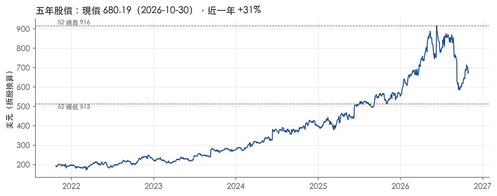

評等總表 › 必需消費 › CASY
油差回歸、成長降檔，倍數仍偏高，看空｜評等 賣出｜目標價 633
| 報告日 | 評等 | 目標價 | 當時股價 | 超額報酬 |
|---|---|---|---|---|
| 2026-10-30 | 賣出 | 633 | 680 | -16.5% |
| 評等 | 賣出（邊界，鄰近減碼） |
| 12 個月目標價 | 633 美元 |
| 現價 | 680.19 美元（2026-10-30） |
| 預期報酬 | 股價 -7.0%＋股息 0.4%＝總報酬 -6.5%；同業籃門檻 10.0%，超額 -16.5% |
| 估值方法 | P/E 27.0x，套在第 5–8 季的EPS（也就是一年後的未來四季） |
| 三情境 | 熊 427／基準 613／牛 773 |
| 研究流程 | 四位研究員兩輪辯論＋研究總監裁決 |
| 資料來源 | SEC EDGAR XBRL、Tiingo、FRED（全免費） |
油差回歸、成長降檔，倍數仍偏高，看空（研究總監裁決，四位研究員兩輪辯論後）
評等 賣出（邊界，鄰近減碼）｜12 個月目標價 633 美元（總監三情境機率加權 638 與研究員中位數 628 各半）｜現價 680.19（2026-10-30）
預期報酬：股價 -7.0%＋股息 0.4%＝總報酬 -6.5%。同業籃門檻 10.0%，超額 -16.5%，離減碼的分界不到三個百分點，屬邊界評等（落在其他級距的機率約四成）。
估值方法：P/E 27.0x，套在第 5–8 季的EPS（也就是一年後的未來四季）。三情境：熊 427（14%）／基準 613（54%）／牛 773（32%）。
什麼會讓研究總監改變看法：FY2027Q2、Q3 每加侖毛利都守 46¢ 以上、同店加侖轉正且公司上修 FY2027 EBITDA 指引至 12% 以上，我會把 op_margin_y2 調回 5.9–6.0%、倍數到 29x 並轉中性；反之 FY2027Q3 在油價下行中跌破 42¢，op_margin_y1 下修到 5.5%。
| 過去四季（實際，FY2027Q1） | 未來四季 | 第 5–8 季 | 第 9–12 季 | |
|---|---|---|---|---|
| 營收（B） | 18.7B | 20.9B | 21.5B | 22.6B |
| 營收成長 | 13.8% | 12.0% | 3.0% | 5.0% |
| 營業利益率 | 5.9% | 5.7% | 5.6% | 5.6% |
| EPS（美元） | 20.75 | 22.28 | 22.69 | 24.06 |
| EPS 成長 | 33.2% | 7.3% | 1.9% | 6.0% |
| 每股股息（美元） | — | 0.00 | 0.00 | 0.00 |
| P/E（現價） | 32.8x | 30.5x | 30.0x | 28.3x |
| 股息殖利率（現價） | 0.4% | — | — | — |
過去四季為申報數字；預測為研究總監的假設、程式計算。倍數與殖利率都用現價計算，用來看現價對應各期獲利的高低。
| 情境 | 機率（歷史） | 故事 | 未來四季營收成長 | 第 5–8 季營益率 | 倍數 | 目標價 | 股價漲跌 |
|---|---|---|---|---|---|---|---|
| 熊 | 14%（14%） | 風險表第 1、3、4 條：本行下行路徑 WTI 95、失業率 5.1，油價不降沒有零售毛利緩衝，每加侖毛利回 39¢、同店加侖轉負，費用與刷卡費剛性，盈餘與倍數雙殺 | 13.0% | 4.9% | 22.0x | 427 | -37.3% |
| 基準 | 54%（54%） | 油價下行期毛利從 47.8¢ 回落、Q5–Q8 停在 44¢，店內增量填不滿費用增量，EPS 兩年低個位數成長，倍數向 5 年中位收斂 | 12.0% | 5.6% | 27.0x | 613 | -9.9% |
| 牛 | 32%（32%） | 本行上行路徑 WTI 72：批發價續跌使零售毛利守 47¢ 上下、加侖轉正、店內同店達 5% 上緣，分母縮小撐起營益率，市場維持現行前瞻倍數 | 9.0% | 6.4% | 31.0x | 773 | 13.6% |
目標價由程式依研究總監的驅動與倍數計算；機率由研究總監給定。括號內是歷史頻率：把這檔股票過去十年 12 個月報酬的波動形狀，置中在基準情境，結果落在各情境附近的比例。

四位研究員用不同方法各自估值，回應研究總監的質疑後交出第二輪，最後由總監逐點裁決。各研究員的主張見第七章，裁決理由見第八章，完整論證見《研究底稿》。
| 立場（一輪→二輪） | 加權目標價（一輪→二輪） | 評等（一輪→二輪） | 第二輪倍數 | 熊～牛目標價 | |
|---|---|---|---|---|---|
| R1 成長與敘事 | 中性→看空 | 668→603 | 減碼→賣出 | 27.0x | 470～756 |
| R2 資本報酬與價值 | 看空→看空 | 600→627 | 賣出→賣出 | 27.0x | 476～752 |
| R3 盈餘品質與下檔 | 看空→看空 | 630→652 | 賣出→減碼 | 27.0x | 426～771 |
| R4 市場隱含預期 | 看空→看空 | 628→628 | 賣出→賣出 | 26.0x | 444～704 |
| 研究總監裁決 | 看空 | 633 | 賣出 | 27.0x | 427～773 |
目標價由程式依各自的驅動與倍數計算；評等＝機率加權總報酬 − 同業籃門檻。
Casey's 是美國中西部主導的便利商店連鎖，以「Casey's」「Casey's General Store」為主要品牌，同時經營「GoodStop (by Casey's)」及「CEFCO」兩個收購來的次品牌。截至2026年4月30日，公司在19個州經營2,944家門市，其中約一半集中在愛荷華、密蘇里與伊利諾伊州¹。約71%的門市開在人口低於20,000人的地區，公司以地點、營業時間、產品組合、價格與服務品質作為競爭基礎¹。所有門市均提供食品、飲料、菸草與尼古丁產品、雜貨、保健美容用品、汽車用品等，除六家門市外均售油，241家門市提供洗車服務¹。公司本質上是「加油站＋現做餐食便利商店」的雙引擎零售商，靠油品帶客流、靠店內高毛利商品賺錢。
公司財報將營收拆成四類：現做食品與調製飲料（Prepared Food & Dispensed Beverage）、雜貨與一般商品（Grocery & General Merchandise）、燃油（Fuel）與其他（Other）²。以FY2027Q1為例，燃油收入3,724.8M，佔總營收5,678.3M的大部分；雜貨與一般商品收入1,285.0M，毛利率35.6%；現做食品與調製飲料收入492.6M，毛利率高達59.3%；其他收入176.0M²。過去三個財年，現做食品與調製飲料加上雜貨與一般商品約佔總營收36%，但貢獻了約63%的「營收減銷貨成本（不含折舊攤銷）」，其中現做食品與調製飲料單項的該毛利率三年平均約58%¹。零售燃油方面，FY2026全年賣出3,515,197千加侖，零售燃油收入10,615.4M，佔總營收60.4%，但毛利率只佔「營收減銷貨成本」的14.1%¹。公司旗艦產品是1984年起販售的披薩，幾乎所有門市都有，另外近年擴大雞翅（bone-in/boneless wings）供應至約850家門市，並計畫持續鋪開¹。公司也經營批發油品網絡，供應給自身不經營的經銷商據點，FY2026批發燃油約佔總營收3%¹。簡單說，燃油撐營收規模，現做食品與飲料撐毛利結構，這是典型便利商店財務模型。
公司客群以中西部小鎮及中型社區居民為主，門市選址標準強調周邊人口規模與高速公路日交通量¹。通路除實體門市外，公司透過自有三座物流中心（鄰近Ankeny總部的Store Support Center、Terre Haute, Indiana、Joplin, Missouri）供應大部分門市的雜貨、一般商品與現做食品原料，並自行配送大部分燃油，擁有逾500輛牽引車車隊¹。超出物流中心約500英里最佳效率半徑的門市（例如佛羅里達州）則由第三方物流夥伴供應¹。忠誠度計畫「Casey's Rewards」是數位通路的核心，FY2026財年底會員數成長至近10.5百萬人³。公司主要透過併購（含Fikes收購）與新建門市雙軌擴張地理版圖，FY2026全年新增40家新建門市與40家收購門市，關閉41家，門市總數從2,904家增至2,944家³。FY2027Q1再新建9家、收購12家、關閉或處分6家，季末門市數來到2,959家²。
FY2026Q2營收4.51B，年增14.2%，營益率6.6%（is.revenue、is.ebit等見資料包FY2026Q2欄）。FY2026Q3營收回落至3.92B，年增僅0.3%，營益率降到5.0%，屬於淡季季度（資料包FY2026Q3欄）。FY2026Q4營收4.57B，年增14.5%，淨利162.7M，稀釋EPS 4.37美元，較去年同期2.63美元成長66.2%，EBITDA 350.3M，年增33.2%³；該季店內同店銷售增5.5%（兩年疊加7.4%），店內毛利率42.4%，店內毛利增10.5%至643.4M；燃油同店加侖數增1.5%，毛利率46.9美分/加侖，燃油毛利增29.1%至397.4M³。FY2026全年淨利714.4M，年增30.7%，EBITDA近1.5B，年增23.6%，稀釋EPS 19.16美元，年增30.9%；公司並於該年度納入S&P 500指數³。FY2027Q1（截至2026年7月31日）營收5.68B，年增24.3%，淨利273.7M，年增27.1%，稀釋EPS 7.37美元，年增27.7%，EBITDA 485.1M，年增17.1%²；店內同店銷售增3.2%（兩年疊加7.7%），店內毛利率42.2%；燃油同店加侖數降0.3%（兩年疊加正1.4%），燃油毛利率47.8美分/加侖，燃油毛利大增19.6%至446.9M²。公司FY2027展望維持不變：預期店內同店銷售增2%至5%、店內毛利率高於42%，同店燃油加侖數介於負1%至正1%，總營業費用增約5%至7%，EBITDA增8%至10%（中值隱含兩年疊加35%成長）²。
公司稱其成長策略聚焦於「持續調整產品線，特別是現做食品與自有品牌等高毛利產品」，並透過幾乎所有門市設置全套廚房來支撐此策略¹。CEO Darren Rebelez表示FY2027首季是「三年戰略計畫開局良好」，特別點出整塊披薩（whole pies）的高品質現做食品價值主張受賓客歡迎，同時Fikes收購整合進度超前排期²。管理層在FY2026年報新聞稿中強調，公司完成的三年戰略計畫以714M淨利與近1.5B EBITDA收官，店內同店銷售全年增4.2%（兩年疊加7.0%），主要受現做食品與非酒精飲料帶動，燃油團隊則「平衡了加油量與毛利率」帶動燃油毛利增21%³。公司明確將併購與新建門市並列為FY2027擴張引擎，計劃至少開120家新店，並已將股票回購授權擴大至10億美元上限³。整體看，公司的成長邏輯是「現做食品毛利結構升級＋門市數量擴張（併購優先）＋適度槓桿下的股東回饋（股息27年連增＋回購）」三件事並行，而非單純靠油價或油量。目前同店燃油加侖數已連續轉弱（FY2027Q1轉負0.3%），未來成長將更依賴店內同店銷售與毛利率提升，以及併購整合（Fikes）能否持續貢獻規模。估值面上公司trailing P/E、EV/EBITDA等倍數均處於過去五年70–85百分位的相對高位（資料包band區），顯示市場已部分反映此成長敘事。

Casey's 評為窄護城河：我們有把握未來 5 年以上 ROIC 仍高於資本成本，但沒有把握撐到 10 年。優勢主要來自兩處，一是小鎮市場的效率規模，二是自營物流與自有不動產帶來的成本優勢，品牌只是輔助。趨勢判為穩定而非變寬，因為近期 ROIC 與營益率創十年新高，其中一部分來自燃油每加侖毛利上揚，這部分不屬於結構性優勢。
效率規模是最主要的來源。約71%的門市開在人口少於20,000人的地區¹。公司營運所在的許多小社區，通常沒有全國連鎖便利商店進駐¹。公司認為 Casey's 門市在小鎮提供的服務一般無從他處取得，人口有限地區的便利商店只要主打銷量、品質與有競爭力的價格就能獲利¹。小鎮市場只容得下一家像樣的門市，先進者佔位後，後進者的報酬撐不起建店投資，這是典型的效率規模。
成本優勢來自垂直整合的物流與自有資產。公司經營三座物流中心，大部分燃油自行配送，截至2026年4月30日擁有超過500輛牽引車¹。大多數現有與規劃中的門市，都落在三座物流中心約500英里的最佳效率半徑內¹。FY2026 經物流中心供貨的食品與非食品品項，多數直接向製造商採購¹。公司擁有大部分不動產，包括幾乎所有門市、三座物流中心與一座燃油油庫¹。小鎮門市分散，對手若仰賴第三方批發配送，單店物流成本難以追上，這是 Casey's 能在低人口區獲利的關鍵。
無形資產（品牌）有證據，但力道有限。旗艦產品披薩自1984年開賣，幾乎所有門市都有供應¹。過去三個財年，現做食品與調製飲料加上雜貨與一般商品約佔總營收36%，卻貢獻約63%的營收減銷貨成本（不含折舊攤銷）¹。現做食品與調製飲料的這項比率，三年平均約58%¹。這個毛利水準說明現做食品有定價力，但披薩與三明治容易被模仿，品牌優勢侷限在既有區域。Casey's Rewards 會員超過 10 million 人，但點數計畫沒有實質轉換成本，因此不列入優勢來源。
數字看得到優勢，但只撐得起窄、撐不起寬。ROIC 十年平均11.9%、標準差1.1%，最低9.6%、最高13.6%。資本成本代理值為10.0%，ROIC 平均只比資本成本高1.9%；有資料的9年中，有8年高於資本成本。ROIC 的穩定度符合有護城河的特徵，但超額報酬太薄：資本成本上移，或 ROIC 回到區間低端，超額報酬就會歸零，這是我們不給寬的主因。唯一低於資本成本的年份是 FY2019，ROIC 為9.6%（資料包 FY2019 欄）。營業利益率十年平均4.4%、標準差0.8%，區間3.2%至5.9%，波動小，與效率規模的主張一致。
數字與主張有兩處衝突，必須照實揭露。第一，量化底稿的毛利率「最新」與「最高」都是23.4%，但這其實是 FY2020 的數字，資料包 FY2021 以後的毛利率全部空白（資料包年度表），所以毛利率穩定只能驗證到 FY2020。第二，最新 ROIC 13.6%與營益率5.9%同時是十年最高，看起來像護城河變寬。不過燃油每加侖毛利從 FY2025 的38.68¢升到 FY2026 的42.57¢，FY2024 則為39.48¢¹。FY2026 每加侖毛利年增10.1%¹。在每加侖毛利固定的情況下，燃油毛利率會隨零售油價反向波動¹。高點有一部分來自燃油價差順風，不能外推成結構性改善，因此趨勢維持穩定。FCF 利潤率十年平均2.1%、標準差1.9%、最低-1.9%，這反映的是展店與併購資本支出的起伏，不是經營獲利本身在波動。
最大威脅有兩個：燃油帶來的來客長期下滑，以及往大型市場擴張後規模優勢被稀釋。
目標倍數可以給同業小幅溢價，但溢價期間只該抓5年左右，不支持寬護城河式的長期高倍數。理由是 ROIC 雖然穩定，超額報酬只有1.9%；而現在 P/E 32.8x 已高於5年中位數25.4x，P/FCF 38.9x 也逼近5年 P90 的39.8x，市價已把燃油順風當成結構性改善。建議以5年中位數附近作為倍數錨，溢價幅度取決於燃油價差回落時，店內毛利能否守住。
| 指標 | 最新 | 十年平均 | 標準差 | 最低 | 最高 |
|---|---|---|---|---|---|
| ROIC | 13.6% | 11.9% | 1.1% | 9.6% | 13.6% |
| 毛利率 | 23.4% | 21.9% | 1.0% | 20.9% | 23.4% |
| 營業利益率 | 5.9% | 4.4% | 0.8% | 3.2% | 5.9% |
| FCF 利潤率 | 4.1% | 2.1% | 1.9% | -1.9% | 4.2% |
| ROE | 19.2% | 18.2% | 2.9% | 15.2% | 25.8% |
程式計算。資本成本代理值（10 年債＋5%）：10.0%；ROIC 平均減資本成本：1.9%；ROIC 有資料的 9 年中，高於資本成本 8 年。
盈餘品質計分表九項指標中六項綠燈、三項黃燈、無紅燈，核心問題是資本支出與併購整合吃掉部分現金轉換效率，而非盈餘造假或應計堆積【判，量化底稿】。
營業現金流／淨利 LTM 1.80x、近三年1.90x、十年2.10x，全部綠燈，顯示淨利有紮實的現金支撐【判，量化底稿】。應計比率 LTM -6.8%、近三年-7.2%、十年-7.6%，持續為負，代表CFO長期高於淨利，盈餘不是靠應計項目灌出來的【判，量化底稿】。但自由現金流／淨利 LTM 0.84x、近三年0.94x、十年僅0.68x，列為黃燈，顯示扣掉資本支出後實際留存現金系統性低於報表淨利【判，量化底稿】。最新一季（FY2027Q1）CFO為384.072M，而購置不動產及設備194.395M加上併購付款43.904M，合計資本性支出238.299M，壓低了當季FCF²。公司FY2027資本支出guidance約800M，高於FY2026全年水準，加上淨利息支出guidance約95M，顯示擴店、車隊與Fikes整合仍在持續吃現金²。這個落差是成長性資本支出造成，不是盈餘品質缺陷。
新聞稿唯一使用的非GAAP指標是EBITDA（淨利加回利息、稅、折舊攤銷），公司沒有另外揭露「調整後EPS」或剔除重組費用之類的指標²。現金流量表中淨利調整回CFO的項目包括：折舊攤銷115.994M、股權薪酬16.930M、資產處置損失及減損2.222M、遞延所得稅32.797M、LIFO存貨估值變動1.094M²。這些都是經常性、小額、透明的會計調整，沒有把一次性重組費或減損自EBITDA中剔除再美化盈餘的證據。股權薪酬16.930M相對當季淨利273.720M與營收5,678.336M占比極小，SBC／營收指標LTM、近三年、十年均為0.3%綠燈，不需要對盈餘額外打折【判，量化底稿】。整體而言，Casey's的GAAP與非GAAP差距很小，是這份報告裡盈餘品質最乾淨的一塊。
淨負債／EBITDA LTM 1.23x，近三年1.48x，十年1.75x，三者皆綠燈且遠低於1.50x門檻，槓桿結構穩健【判，量化底稿】。截至2026年7月31日，現金524.059M，長期負債（含流動部分）合計約2,430.523M（2,326.200M長期+104.323M流動）²。利息保障倍數LTM 11.9x、近三年11.2x、十年9.01x，全部綠燈，當季淨利息支出僅22.059M，相對營業利益覆蓋輕鬆²【判，量化底稿】。（股利＋回購）／淨利 LTM 38.8%、近三年28.8%、十年31.3%，列為黃燈（低於50%綠燈門檻），當季支付股息22.283M、回購約45.6M²，低於50%代表公司把多數現金留供展店與併購，而非舉債發股利，FY2027計畫至少開120家新店²，屬於成長優先的資本配置而非警訊。稀釋股數變動LTM -0.4%、近三年-0.2%、十年-0.7%，持續小幅淨減少，沒有稀釋風險【判，量化底稿】。
估值應以LTM FCF 0.65B而非GAAP淨利或EBITDA作為現金流折現或殖利率計算基礎，因為FCF／淨利長期僅0.68–0.94x，用淨利會系統性高估可分配現金【判，量化底稿】。盈餘的現金含量與會計口徑本身乾淨，不需要對GAAP EPS另外打品質折扣，三項黃燈都是成長性資本配置與鋪貨造成，可被原文與現金流量表解釋。目前trailing P/E 32.8x（5年74百分位）、EV/EBITDA 17.5x（5年78百分位）偏貴反映的是成長溢價而非盈餘品質問題，低槓桿（淨負債／EBITDA 1.23x）與高利息保障（11.9x）不構成限制倍數的理由【判，量化底稿】。
| 項目 | LTM | 近三年 | 十年 | 燈號 | 規則 |
|---|---|---|---|---|---|
| 營業現金流／淨利 | 1.80x | 1.90x | 2.10x | 綠 | ≥1.00x 綠、<0.80x 紅 |
| 自由現金流／淨利 | 0.84x | 0.94x | 0.68x | 黃 | ≥0.90x 綠、<0.60x 紅 |
| 應計比率（(淨利−CFO)／平均總資產） | -6.8% | -7.2% | -7.6% | 綠 | ≤0.0% 綠、>5.0% 紅 |
| SBC／營收 | 0.3% | 0.3% | 0.3% | 綠 | ≤3.0% 綠、>8.0% 紅 |
| 淨負債／EBITDA | 1.23x | 1.48x | 1.75x | 綠 | ≤1.50x 綠、>3.00x 紅 |
| 利息保障倍數（營業利益／利息） | 11.9x | 11.2x | 9.01x | 綠 | ≥8.00x 綠、<3.00x 紅 |
| 稀釋股數年變動 | -0.4% | -0.2% | -0.7% | 綠 | ≤0.0% 綠、>3.0% 紅 |
| （股利＋回購）／淨利 | 38.8% | 28.8% | 31.3% | 黃 | ≥50.0% 綠、<0.0% 紅 |
| 存貨成長 − 營收成長（FY2026） | +5.9pp | — | — | 黃 | ≤5pp 綠、>15pp 紅 |
程式計算；燈號以 LTM（無則近三年平均）判定。
| 風險 | 觸發指標（看什麼數字、在哪裡看） | 對 EPS 的影響方向與粗略幅度 | 未來 12 個月發生機率 | 出處 |
|---|---|---|---|---|
| 燃油毛利率回歸常態＋同店加侖數轉負 | 每季8-K「Fuel margin (cents per gallon)」與「Same-store gallons sold」 | 負向，大：FY2027Q1燃油毛利率47.8¢/gal，去年同期41.0¢/gal，燃油毛利年增19.6%至446.9M；同店加侖數已轉負0.3%² | 高 | 8-K 財報新聞稿（2026-09-08） |
| 估值已處於過去五年高分位，任何展望下修都會放大跌幅 | trailing P/E、EV/EBITDA、EV/Sales 在5y分位 | 負向，大：現在P/E 32.8x（5y分位74.3%）、EV/EBITDA 17.5x（78.1%）、EV/Sales 1.5x（86.4%）（band.*） | 高 | 研究判斷 |
| 商品與人力成本上升侵蝕店內毛利 | 10-Q/10-K「Inside margin」、「same-store operating expenses excluding credit card fees」 | 負向，中：FY2027Q1同店營運費用（不含信用卡費）增5.0%，去年同期3.0%；乳酪為最大食材成本且波動大² | 中 | 8-K 財報新聞稿（2026-09-08） |
| 信用卡手續費隨營收規模放大，侵蝕營益率 | 10-K/10-Q揭露的「Total credit card fees」金額與佔營收比 | 負向，中：FY2026全年信用卡手續費279M；FY2027Q1單季85.7M，年增19.5%⁵ | 高 | 10-K 年報 FY2026 Item 1A（風險因素） |
| 併購（Fikes等）整合與展店不如預期，120家新店目標落空 | 公司財報「Expansion」表（新建/併購/關閉店數）、FY2027展望120家開店目標達成率 | 負向，中：FY2027目標至少開120家店，FY2027Q1僅新增9家新建+12家併購-6家關閉，淨增15家，進度偏慢² | 中 | 8-K 財報新聞稿（2026-09-08） |
燃油毛利率回歸常態是最大的單一風險。公司淨利「顯著受零售燃油毛利率變動影響」⁵，過去三個財年零售燃油佔總營收約62%，但僅貢獻「營收減銷貨成本」約34%⁵。FY2027Q1燃油毛利率拉到47.8¢/gal，較去年同期41.0¢/gal大幅躍升，是單季淨利年增27.1%的主要貢獻來源之一²。同時同店加侖數已轉負0.3%，公司FY2027全年展望同店加侖數區間為負1%至正1%²。10-K明確警告原油與批發油品市場波動劇烈，難以預測未來油品成本波動對經營結果的影響⁵。只要毛利率從目前高點往五年均值回落（量化底稿顯示FY2025Q2—FY2026Q4區間毛利率明顯低於此水準），燃油毛利貢獻會大幅收縮，而這部分目前沒有對沖機制揭露。
估值分位本身就是風險放大器。目前trailing P/E 32.8x處於五年74.3百分位、EV/EBITDA 17.5x處於78.1百分位、EV/Sales 1.5x處於86.4百分位（band.*）。這代表市場定價已經打入持續的毛利率與展店雙擴張敘事，一旦任何一項指標（同店銷售、燃油毛利、展店節奏）不如預期，倍數回落到五年中位數（P/E 25.4x、EV/EBITDA 13.3x）將同時疊加EPS下修，形成雙殺。
商品與人力成本上升是結構性、持續性的風險。10-K點名乳酪是公司最大食材成本項，且「可能因天氣、供給、全球需求等因素大幅波動」，公司未必能或願意把成本轉嫁給消費者⁵。FY2027Q1同店營運費用（不含信用卡費）年增5.0%，較去年同期3.0%明顯加速，其中員工成本因時薪上升貢獻約1%、保險費用貢獻約1%²。公司FY2027展望總營業費用預期增5%至7%²，若店內同店銷售不如預期（展望2–5%），費用增速超過營收增速會直接壓縮營益率。
信用卡手續費是隨營收規模自動放大的隱性費用。10-K直接指出「信用卡手續費直接增加營運費用」且公司對此「幾無控制力」⁵。FY2026全年信用卡手續費達279M⁵，FY2027Q1單季已達85.7M，較去年同期71.7M增19.5%，增速高於營收增速（24.3%左右但基期不同）²。公司自己將「同店信用卡手續費」列為FY2027Q1營運費用增加8.0%中約1.5個百分點的貢獻因子²，這是油價與客單價雙重驅動、公司無法議價的成本。
併購整合與展店節奏落後會直接拖累成長敘事。10-K列出多項併購風險，包括「無法以有利價格取得合適場址」「收購後發現未揭露負債」「整合既有財務控制、資訊系統與人力資源的困難」⁵。FY2027展望設定至少120家新店（併購+新建）²，但首季僅新建9家、併購12家、關閉6家，淨增僅15家，若全年要達標需要後三季大幅加速²。CEO雖稱Fikes整合「超前排期」²，但這是管理層自評，缺乏外部可驗證指標。
股票回購與股息政策在槓桿上升環境下的排序問題：FY2027Q1淨負債1.91B，公司仍以45.6M回購股票並維持每股0.65美元配息，同時資本支出預期FY2027約800M、淨利息費用約95M²。若EBITDA成長不如展望（8–10%）而資本支出與股東回饋維持剛性，淨負債/EBITDA比率可能走高，進而觸及10-K提到的「Senior Notes與信用額度中的財務維持性covenant」⁵，但10-K未揭露具體covenant門檻數字，這是監測盲點。
同店加侖數與同店銷售的「兩年疊加」計算方式可能掩蓋近期真實減速：公司展望與新聞稿頻繁引用「two-year stack」數字（例如店內同店銷售兩年疊加7.7%）²，但單年同店數字（燃油同店加侖-0.3%）已經轉負。若後續季度持續使用兩年疊加包裝單年轉弱的事實，投資人容易低估短期動能惡化的速度，應優先盯當季單年同店數字而非疊加數字。
現價 680.19 對應 trailing（過去四季）P/E 32.8x、EV/EBITDA 17.5x、EV/EBITA 24.8x、EV/Sales 1.5x、FCF 殖利率 2.6%。主要估值倍數 P/E 現在 32.8x，落在5 年區間第 74 百分位（P10／P50／P90 = 20.3x／25.4x／40.2x）。

把程式的機械基準預測放到現價下，市場付的前瞻倍數是：P/E（未來四季） 29.2x、P/E（第 5–8 季） 26.5x。反推 DCF 顯示市價隱含未來五年營收年成長 21.8%（WACC 9.0%、終值成長 3.0%、FCF 利潤率 3.0%，SBC 不加回）。
| 倍數 | 現在 | 5 年 P10 | 5 年 P50 | 5 年 P90 | 現在分位 | 全期 P50 |
|---|---|---|---|---|---|---|
| P/E | 32.8x | 20.3x | 25.4x | 40.2x | 74.3% | 24.1x |
| EV/EBITDA | 17.5x | 10.7x | 13.3x | 20.1x | 78.1% | 12.1x |
| EV/EBITA | 24.8x | 16.3x | 20.2x | 29.5x | 72.4% | 20.0x |
| EV/EBIT | 24.8x | 16.3x | 20.2x | 29.5x | 72.4% | 20.0x |
| EV/Sales | 1.5x | 0.7x | 0.9x | 1.6x | 86.4% | 0.8x |
| P/S | 1.4x | 0.6x | 0.8x | 1.5x | 86.5% | 0.7x |
| P/FCF | 38.9x | 17.5x | 30.2x | 39.8x | 86.7% | 31.2x |
trailing 倍數（股價 ÷ 過去四季）；分位以每個交易日計算。
同業籃：MUSA, KR, COST, WMT, DG（手動名單（playbooks/peers.yaml））。評等門檻 10.0%：同業「倍數不變下持有一年」的隱含報酬中位數（＝ FCF 殖利率 ×(1＋g)＋g，g 為 5 年營收年複合成長並夾在 −2%～8%），每家夾在 0～15%、P/E 低於 5 倍視為資料可疑而排除，中位數再限制在 10 年債到 10 年債＋5% 之間（同業原始中位數 11.1%）；排除：KR（隱含報酬算不出來）。
| 代號 | 市值 | 5 年營收 CAGR | 營益率 | ROIC | P/E | 5 年 P/E 中位數 | EV/EBITDA | P/FCF | 隱含報酬 |
|---|---|---|---|---|---|---|---|---|---|
| CASY | 25.3B | 15.1% | 5.9% | 13.6% | 32.8x | 25.4x | 17.5x | 38.9x | 10.8% |
| MUSA | 9.7B | 11.5% | 4.2% | 20.5% | 15.1x | 15.9x | 9.2x | 14.5x | 15.4% |
| KR | — | 2.2% | — | 8.3% | — | — | — | — | — |
| COST | 448.7B | 9.1% | 3.8% | 43.6% | 50.9x | 50.6x | 31.5x | 51.0x | 10.1% |
| WMT | 985.4B | 5.0% | 4.4% | 17.7% | 44.6x | 38.5x | 21.6x | 72.9x | 6.4% |
| DG | 29.3B | 4.8% | 5.6% | 13.8% | 17.2x | 18.8x | 9.2x | 14.6x | 12.0% |
| 同業中位數 | 5.0% | 4.3% | 17.7% | 30.9x | 28.6x | 15.4x | 32.8x | 10.0% |
全部 trailing，程式以各公司 SEC XBRL 與 Tiingo 行情計算；第一列為本檔。
P/E 相對同業中位數：現在 6.0%，過去 1 年平均 27.0%、3 年 11.2%、5 年 -2.2%；EV/EBITDA 相對同業中位數：現在 13.1%，過去 1 年平均 20.8%、3 年 11.2%、5 年 0.9%。

事後實現前瞻倍數帶（P/E，2018-09-17..2025-09-15）：P10／P50／P90 = 16.6x／19.6x／24.2x。它是每個交易日的股價除以之後四季實際實現的指標；一年後，今天的第 5–8 季正是那時的未來四季，所以這條帶是 12 個月目標價的同口徑倍數。因為用的是事後實際而非當時預期，過去成長超乎預期的公司這條帶會偏低。
程式的機械基準（成長率從過去四季年增率三年收斂到 6%、利潤率持平）用 事後實現前瞻 P/E P50 估值得到 502（-26.2%），市場現行前瞻倍數（現價 ÷ 基準 未來四季指標）一年後持平，套在基準 第 5–8 季指標得到 748。這兩個數字只是參考點，不是本報告的目標價；研究員對這個定價的回應在第七章。
下表是每位研究員第一輪（各自獨立）與第二輪（回應研究總監的質疑後）的結果。目標價全由程式依各自的假設計算。
| 立場（一輪→二輪） | 加權目標價（一輪→二輪） | 評等（一輪→二輪） | 第二輪倍數 | 熊～牛目標價 | |
|---|---|---|---|---|---|
| R1 成長與敘事 | 中性→看空 | 668→603 | 減碼→賣出 | 27.0x | 470～756 |
| R2 資本報酬與價值 | 看空→看空 | 600→627 | 賣出→賣出 | 27.0x | 476～752 |
| R3 盈餘品質與下檔 | 看空→看空 | 630→652 | 賣出→減碼 | 27.0x | 426～771 |
| R4 市場隱含預期 | 看空→看空 | 628→628 | 賣出→賣出 | 26.0x | 444～704 |
| 研究總監裁決 | 看空 | 633 | 賣出 | 27.0x | 427～773 |
目標價由程式依各自的驅動與倍數計算；評等＝機率加權總報酬 − 同業籃門檻。
分歧度：第一輪 加權目標價 600～668（區間＝現價的 10%）· 倍數 26～29x · 立場 中性×1、看空×3；第二輪 加權目標價 603～652（區間＝現價的 7%）· 倍數 26～27x · 立場 看空×4（方向一致）。

| 研究員 | 第二輪主張 | 堅持的理由 |
|---|---|---|
| R1 成長與敘事 | 偏空，給未來一年 EPS 27x，第二年營益率降到 5.6%。 | 以自家五年中位數 25.4x 為錨，拒用超預期成長期算出的前瞻倍數。 |
| R2 資本報酬與價值 | 偏空，給未來一年 EPS 27x，另用 EV/EBITDA 14.5x 對照。 | 油價推高營收時刷卡費同步膨脹，營益率不會跟著上升。 |
| R3 盈餘品質與下檔 | 偏空，給第二年 EPS 27x；帳目乾淨，偏空來自盈餘組成。 | 油價下行期每加侖毛利撐得住，第二年才回到 42.57¢。 |
| R4 市場隱含預期 | 偏空，給第二年 EPS 26x，低於零報酬的 26.5x。 | 現價要求每加侖毛利長期停在 FY2026 平均 42.57¢ 之上。 |
每位研究員的逐條回應與完整論證見《研究底稿》（CASY_研究底稿_2026-11-01.docx）。
| 分歧點 | R1 | R2 | R3 | R4 | 什麼資料會分出勝負 |
|---|---|---|---|---|---|
| NTM 營收成長（rev_growth_y1） | 7%：隱含油價比本行更快回落，未申報偏離 | 11.2%（回基準）：FY2026Q2–Q4 低基期＋WTI 97→88 | 12% | 12% | FY2027Q2 營收年增（2026-12 公布），對 4.51B 基期 |
| Q5–Q8 營收成長（rev_growth_y2） | 3%：展店補量 | 3% | 2%：營收成長主要是價格 | 2% | FY2027 新建＋併購家數對 120 家目標；總加侖年增 |
| NTM 營益率（op_margin_y1）：油價下行期毛利撐不撐 | 5.8% | 5.8%：刷卡費隨油價膨脹 | 5.9%：批發價跌、零售毛利撐住 | 5.7%：部分回歸 | FY2027Q2、Q3 每加侖毛利；FY2027 EBITDA 對指引 8–10% 的落差 |
| Q5–Q8 營益率（op_margin_y2）：正常化水準與換算 | 5.6%：回 44¢，店內增量填不滿費用增量 | 5.7%：部分回歸 | 5.8%：回 42.57¢ | 6.0%：回 42.57¢＋分母縮小 | FY2028Q2 每加侖毛利（油價持平後）；店內毛利年增對營業費用年增 |
| 倍數錨與口徑 | 27x ntm：trailing 5 年 P50 上方 | 27x ntm；EV/EBITDA 14.5x 對照 | 27x q5_q8：事後帶 P90 之上、個股重評價回吐 | 26x q5_q8：零報酬 26.5x 之下 | 一年後 trailing P/E 落在 25.4x–30.6x 還是守住 32.8x；FY2028Q1 EPS 年增 |
一、NTM 營收成長：選 R3／R4 的 12%。 R2 的論證成立：NTM 前三季對比 FY2026Q2 4.51B、Q3 3.92B（年增僅 0.3%）、Q4 4.57B（～Q4），本行前提 2026Q4 WTI 仍在 97，只有 FY2028Q1 對上 5.68B 高基期時油價才到 88；FY2027Q1 營收年增 24.3% 而總加侖只增 2.5%（8-K 2026-09-08），營收由油價決定。R2 停在基準 11.2%，R3／R4 多出的 0.8pp 與研究部營收預測系統性偏低（誤差中位數 -0.4%～-0.7%，預測紀錄表）方向一致，取 12%。R1 的 7% 隱含油價比本行路徑更快回落，卻無 macro_deviations 也無個股理由，退回。
二、Q5–Q8 營收成長：選 R1／R2 的 3%。 四人都接受油價停在 88 使燃油營收轉負貢獻，差別在量。公司重申至少 120 家新店（8-K 2026-09-08），對 2,959 家基數是中個位數的門市成長；R3／R4 的 2% 等於假設 Q1 淨增 15 家的慢步調延續全年，但指引已重申，證據不足。
三、NTM 營益率：選 R4 的 5.7%（假設）。 決定性證據是指引：FY2027 EBITDA 增 8–10%、D&A 約 490M、營業費用增 5–7%（8-K 2026-09-08），基期 FY2026 EBITDA 1.48B；基準 NTM EBITDA 1.73B 明顯高於指引上緣（R1 第二輪已指出），且 Q1 EBITDA 已增 17.1% 公司仍不上修，後三季必然減速。費用面同向：Q1 營業費用 754.1M 已大於店內毛利 749.8M，同店費用（扣刷卡費）增 5.0%、刷卡費 85.7M 對 71.7M，增速都高於店內毛利的 6.3%（8-K 2026-09-08）。R3 的「批發價下跌期零售毛利撐住」機制成立（WTI 由現價 103 走向 97、88），這是我不直接採指引中段的原因，但它抵銷不了整段指引落差；R1／R3／R4 的營業利益預測紀錄都偏高（+2.6%／+0.6%／+1.8%），也該往下修。R1／R2 的 5.8% 沒有和指引對帳。
四、Q5–Q8 營益率：選 R1 的 5.6%。 R1 的三段拆解是唯一把營益率和各段金額對起來的：營業費用基數大於店內毛利基數（Q1 原文可驗證），同速成長時費用增量就大於店內增量，營業利益成長必須靠燃油毛利；每加侖毛利從 Q1 47.8¢、Q4 46.9¢（8-K 2026-09-08、2026-06-09）回到 44¢（假設，高於 FY2026 的 42.57¢，10-K Item 1）時，營業利益約持平而營收續增，營益率下滑。R3／R4 把 42.57¢ 換算成 5.8%～6.0% 不成立：FY2026 的 5.9%是在油價遠低於 88 的營收基數上做出來的，FY2027Q1 營收年增 24.3% 對加侖 2.5% 就是油價灌大分母的證據；Q5–Q8 在 WTI 88 的分母比 FY2026 大，R4 的分母效應方向相反。R1 引用的 FY2026 三段金額程式對不上來源（出自 8-K 2026-06-09），我以 Q1 原文驗證結構，結論保留。
五、倍數錨與口徑：選 R3，27x eps@q5_q8。 劇本主尺是 q5_q8。事後實現前瞻帶 P50 19.6x、P90 24.2x 取樣於 EPS 從 5.51 到 19.16的超預期成長期，四人都同意它系統性偏低；R1／R2 改用 trailing 錨配 ntm 邏輯一致，但我依劇本採前瞻口徑。27x 高於零報酬 26.5x、低於市場持平 29.2x；換成一年後 trailing 口徑（加一年低個位數 EPS 成長）落在自家 5 年 P50 25.4x 與 3 年 P50 30.6x 之間、遠低於 1 年 P50 40.2x。低於 29.2x 的理由全是個股因素：EPS 成長由 FY2026 的 +30.9% 降到指引 8–10% 對應的個位數、燃油價差循環、P/FCF 38.9x 逼近 5 年 P90 39.8x、ROIC 超額報酬僅 1.9pp（護城河章）。利率不進倍數：R2 第一輪的利率理由已刪，其他人未用。R4 的 26x 與 27x 差距在誤差內，他的錨分不出 26 與 27；我留 27x 給熟食 59.3% 毛利率、店內貢獻約 63% 毛利的結構（8-K 2026-09-08、10-K）。EV/EBITDA 對照取 R2 的 14.5x（假設），在 5 年 P50 13.3x 與現行 17.5x 之間，方向一致；相對同業，P/E 溢價已由 1 年平均 27.0% 回到 6.0%，我假設一年後回到 5 年平均 -2.2% 附近的折價側（同業比較表）。
漂移與總經偏離。 無退回：R2 靠攏 88% 全部來自 V1（我要求的低基期修正，附季營收證據）；R3 的上修來自 Q1、Q2（機率回歷史、分季機制）；R1 靠攏比例 36%，來自 G2、G3 拆解；R4 加權不變。四人 macro_deviations 皆空，油價全採本行三條路徑，接受；R1 的 7% 屬未申報的隱性偏離，已在第一點處理。我的假設以本行基準情境為準（WTI 97→88、聯邦基金 4.38 整年不降、GDP 1.8）。
| 驅動 | 基準 | 裁決 | 來源與理由 |
|---|---|---|---|
| rev_growth_y1 | 11.2% | 12% | R3／R4；低基期＋WTI 97，研究部營收偏低紀錄 |
| rev_growth_y2 | 8.6% | 3% | R1／R2；油價停 88 轉負貢獻，120 家展店補量 |
| rev_growth_y3 | 6.0% | 5% | 四人一致 |
| op_margin_y1 | 5.9% | 5.7% | R4；指引 8–10% 對基準 1.73B 的落差，油價下行期毛利部分撐住 |
| op_margin_y2 | 5.9% | 5.6% | R1；每加侖毛利回 44¢（假設），店內增量填不滿費用增量 |
| op_margin_y3 | 5.9% | 5.6% | own；與 y2 持平（假設），不假設價差再變動 |
| tax_rate | 23.5% | 25% | R1／R3／R4；指引 24–26% 中點 |
其餘（D&A 2.5%、資本支出 4.0%——金額落在 800M 指引附近、SBC 0.4%、股數 -0.6%）沿用基準。目標倍數 27x eps@q5_q8（R3），錨與口徑如第五點；目標價由程式算出，我的 Q5–Q8 EPS 低於 R3 的路徑。
機率從歷史基準率出發：牛情境在基準之上約四分之一、熊情境在基準之下約三成（距離由程式精算）。對照程式給四人的歷史頻率——R3 牛 +23%→34%、R1 牛 +30%→29%；R4 熊 -29%→15%、R3 熊 -32%→12%——我的距離落在其間，取 32／54／14，沒有公司特有的偏離。牛高於熊符合這檔股票置中分布的右偏（P90 +29%、P10 -19%）；研究部 22 份報告全數熊高於牛的習慣，在這裡不延續。本行總經下行機率 25% 是對整體經濟，不等於這檔股票走到熊情境的機率。
現價 680.19用零報酬倍數 26.5x 對應基準 Q5–Q8 EPS 25.63，等於要求營益率停在含兩個高毛利季的 LTM 5.9%、營收照 8.6% 續增。我們的差距兩邊都有：盈餘差在 op_margin_y2（每加侖毛利回 44¢ 而非停在 46–48¢）與 rev_growth_y2（油價停 88），倍數差在 27x 對市場持平 29.2x。立場看空，與程式評等方向一致；門檻 10.0% 來自同業籃（MUSA、DG、COST、WMT）隱含報酬，CASY 自身隱含報酬 10.8% 同量級，沒有門檻不適用的問題；股息率 0.4% 不改變結論。
現價 680.19 → 點估目標價 613 → 機率加權目標價 638 → 目標價 633，差距拆成五段：成長順延 +67 美元（市場現行倍數 29.2x 一年後持平、獲利照機械基準）；倍數差 -56 美元（總監倍數 27.0x vs 市場持平倍數 29.2x，同一機械基準預測）；盈餘差 -79 美元（總監預測的第 5–8 季EPS 0.0B vs 機械基準 0.0B，同一倍數）；情境不對稱 +25 美元（機率加權減點估）；研究小組平均 -5 美元（總監機率加權 638 與研究員第二輪中位數 628 各半）。各段相加等於目標價減現價。本階段未接賣方共識，差距以市場隱含預期為對照。
| 驅動 | 機械基準 | 研究總監 | 差異 |
|---|---|---|---|
| 未來四季營收成長 | 11.2% | 12.0% | +0.8 pp |
| 第 5–8 季營收成長 | 8.6% | 3.0% | -5.6 pp |
| 第 9–12 季營收成長 | 6.0% | 5.0% | -1.0 pp |
| 未來四季營益率 | 5.9% | 5.7% | -0.2 pp |
| 第 5–8 季營益率 | 5.9% | 5.6% | -0.3 pp |
| 第 9–12 季營益率 | 5.9% | 5.6% | -0.3 pp |
| D&A／營收 | 2.5% | 2.5% | ＝ |
| 資本支出／營收 | 4.0% | 4.0% | ＝ |
| SBC／營收 | 0.4% | 0.4% | ＝ |
| 稅率 | 23.5% | 25.0% | +1.5 pp |
| 股數年變動 | -0.6% | -0.6% | ＝ |
研究總監只寫偏移，未寫的沿用基準。
| 期 | 營收 | 成長 | 營益率 | 營業利益 | EBITDA | EBITA | 淨利 | EPS | FCF | 期末淨負債 |
|---|---|---|---|---|---|---|---|---|---|---|
| 未來四季 | 20.9B | 12.0% | 5.7% | 1.2B | 1.7B | 1.2B | 0.8B | 22.28 | 0.6B | 1.6B |
| 第 5–8 季 | 21.5B | 3.0% | 5.6% | 1.2B | 1.7B | 1.2B | 0.8B | 22.69 | 0.6B | 1.3B |
| 第 9–12 季 | 22.6B | 5.0% | 5.6% | 1.3B | 1.8B | 1.3B | 0.9B | 24.06 | 0.6B | 1.0B |
程式依上表的驅動計算；季度用最近四季季節性分攤；不含營運資金變動。
估值方法：P/E 27.0x，套在第 5–8 季的EPS（也就是一年後的未來四季）。研究總監目標倍數的錨：前瞻口徑：高於零報酬 26.5x、低於市場持平 29.2x；換成一年後 trailing 口徑落在自家 5 年 P50 25.4x 與 3 年 P50 30.6x 之間、遠低於 1 年 P50 40.2x；相對同業溢價由 6.0% 回到 5 年平均 -2.2% 附近折價側；低於持平的理由為個股成長降檔、油差循環、P/FCF 近 5 年 P90；EV/EBITDA 對照 14.5x（5 年 P50 13.3x 與現行 17.5x 之間）。
計算：EPS（第 5–8 季） 22.69 × 27.0x → 點估目標價 613（-9.9%）；隱含 P/E（未來四季）27.5x、P/E（第 5–8 季）27.0x、EV/EBITDA（第 5–8 季）13.9x、FCF 殖利率（第 5–8 季）2.6%。
總監三情境機率加權目標價 638，研究員第二輪中位數 628，兩者各半＝目標價 633；預期報酬 股價 -7.0%＋股息 0.4%＝總報酬 -6.5%；減評等門檻 10.0%（同業籃隱含報酬中位數（MUSA, KR, COST, WMT, DG））＝超額報酬 -16.5% → 評等 賣出（超額 >+15% 買進、+5～+15% 加碼、±5% 中立、−5～−15% 減碼、<−15% 賣出）。同一份資料重開研究小組，超額約有正負四個百分點的雜訊（一個標準差，二十檔實測）；以此估計，評等落在其他級距的機率約四成。超額離減碼的分界不到三個百分點，應視為邊界評等。
| 情境 | 機率 | 未來四季成長 | 第 5–8 季成長 | 第 5–8 季營益率 | EPS（第 5–8 季） | 倍數 | 目標價 |
|---|---|---|---|---|---|---|---|
| 熊 | 14% | 13.0% | 1.0% | 4.9% | 19.39 | 22.0x | 427 |
| 基準 | 54% | 12.0% | 3.0% | 5.6% | 22.69 | 27.0x | 613 |
| 牛 | 32% | 9.0% | 1.0% | 6.4% | 24.92 | 31.0x | 773 |
| 主張 | 驗證日 | 看哪個數字 | 門檻 |
|---|---|---|---|
| FY2027Q2 每加侖燃油毛利介於 43¢ 與 47.8¢ 之間 | 2026-12-15 | 8-K Fuel margin (cents per gallon) FY2027Q2 | >= 43 且 < 47.8 |
| FY2027 全年 EBITDA 年增率不超過 12% | 2027-06-30 | FY2027 EBITDA 對 FY2026 1.48B 的年增率 | <= 12% |
| FY2028Q1 稀釋 EPS 年增率不超過 8%（基期 7.37） | 2027-09-15 | FY2028Q1 diluted EPS YoY | <= 8% |
| FY2027 全年新建＋併購門市合計不低於 110 家 | 2027-06-30 | 8-K Expansion 表 New store construction + Acquisitions 累計 | >= 110 |
| FY2028Q2 每加侖燃油毛利不高於 45¢ | 2027-12-15 | 8-K Fuel margin (cents per gallon) FY2028Q2 | <= 45 |
到期由程式結算（第 5 階段帳本）。
內文上標數字對應下列公司申報文件；未標上標的分析與判斷，是研究小組的觀點。報告中的每個數字都經程式逐一核對資料包或原文。
| 期 | 營收 | 成長 | 毛利率 | 營益率 | EBITDA | 淨利 | EPS | CFO | FCF | ROIC | 淨負債 | 稀釋股數 |
|---|---|---|---|---|---|---|---|---|---|---|---|---|
| FY2017 | 7.5B | — | 22.4% | 4.1% | 0.5B | 0.2B | 4.48 | 0.5B | 0.0B | — | 0.8B | 0.0B |
| FY2018 | 8.4B | 11.8% | 21.1% | 3.2% | 0.5B | 0.3B | 8.34 | 0.4B | -0.2B | 11.6% | 1.3B | 0.0B |
| FY2019 | 9.4B | 11.5% | 20.9% | 3.4% | 0.6B | 0.2B | 5.51 | 0.5B | 0.1B | 9.6% | 1.2B | 0.0B |
| FY2020 | 9.2B | -1.9% | 23.4% | 4.3% | 0.6B | 0.3B | 7.10 | 0.5B | 0.1B | 11.1% | 1.2B | 0.0B |
| FY2021 | 8.7B | -5.1% | — | 5.2% | 0.7B | 0.3B | 8.38 | 0.8B | 0.4B | 12.0% | 1.0B | 0.0B |
| FY2022 | 13.0B | 48.8% | — | 3.8% | 0.8B | 0.3B | 9.10 | 0.8B | 0.5B | 11.4% | 1.5B | 0.0B |
| FY2023 | 15.1B | 16.5% | — | 4.2% | 1.0B | 0.4B | 11.91 | 0.9B | 0.4B | 12.6% | 1.3B | 0.0B |
| FY2024 | 14.9B | -1.5% | — | 4.8% | 1.1B | 0.5B | 13.43 | 0.9B | 0.4B | 12.9% | 1.4B | 0.0B |
| FY2025 | 15.9B | 7.3% | — | 5.0% | 1.2B | 0.5B | 14.64 | 1.1B | 0.6B | 12.1% | 2.2B | 0.0B |
| FY2026 | 17.6B | 10.2% | — | 5.9% | 1.5B | 0.7B | 19.16 | 1.4B | 0.7B | 13.6% | 1.9B | 0.0B |
SEC XBRL；每股數據已依拆股換算到現在股數基準。EBITDA 空白 = 該年無形攤銷在 companyfacts 中缺 tag。
| 期 | 期末 | 推導 | 營收 | 毛利率 | 營益率 | EBITDA | 淨利 | EPS | CFO | FCF | 現金 | 總債務 |
|---|---|---|---|---|---|---|---|---|---|---|---|---|
| FY2024Q2 | 2023-10-31 | 4.1B | — | 5.4% | 0.3B | 0.2B | 4.24 | 0.3B | 0.1B | 0.4B | 1.6B | |
| FY2024Q3 | 2024-01-31 | 3.3B | — | 3.9% | 0.2B | 0.1B | 2.33 | 0.1B | -0.0B | 0.2B | 1.6B | |
| FY2024Q4 | 2024-04-30 | Q4 | 3.6B | — | 3.5% | 0.2B | 0.1B | 2.33 | 0.3B | 0.1B | 0.2B | 1.6B |
| FY2025Q1 | 2024-07-31 | 4.1B | — | 6.1% | 0.3B | 0.2B | 4.83 | 0.3B | 0.2B | 0.3B | 1.6B | |
| FY2025Q2 | 2024-10-31 | 3.9B | — | 6.4% | 0.3B | 0.2B | 4.85 | 0.3B | 0.2B | 0.4B | 2.7B | |
| FY2025Q3 | 2025-01-31 | 3.9B | — | 3.5% | 0.2B | 0.1B | 2.33 | 0.2B | 0.1B | 0.4B | 2.7B | |
| FY2025Q4 | 2025-04-30 | Q4 | 4.0B | — | 3.9% | 0.3B | 0.1B | 2.63 | 0.3B | 0.2B | 0.3B | 2.5B |
| FY2026Q1 | 2025-07-31 | 4.6B | — | 6.7% | 0.4B | 0.2B | 5.77 | 0.4B | 0.3B | 0.5B | 2.5B | |
| FY2026Q2 | 2025-10-31 | 4.5B | — | 6.6% | 0.4B | 0.2B | 5.53 | 0.3B | 0.2B | 0.5B | 2.5B | |
| FY2026Q3 | 2026-01-31 | 3.9B | — | 5.0% | 0.3B | 0.1B | 3.49 | 0.3B | 0.1B | 0.5B | 2.4B | |
| FY2026Q4 | 2026-04-30 | Q4 | 4.6B | — | 5.1% | 0.4B | 0.2B | 4.36 | 0.4B | 0.2B | 0.5B | 2.4B |
| FY2027Q1 | 2026-07-31 | 5.7B | — | 6.5% | 0.5B | 0.3B | 7.37 | 0.4B | 0.2B | 0.5B | 2.4B |
流量項目由 10-Q 的年初至今數拆成單季；Q4 = 年度 − 九個月。

本報告由 equity-desk 多代理系統產出，建置中版本，僅供內部研究與方法驗證，不構成投資建議。所有數字以 datapack.json 為準。